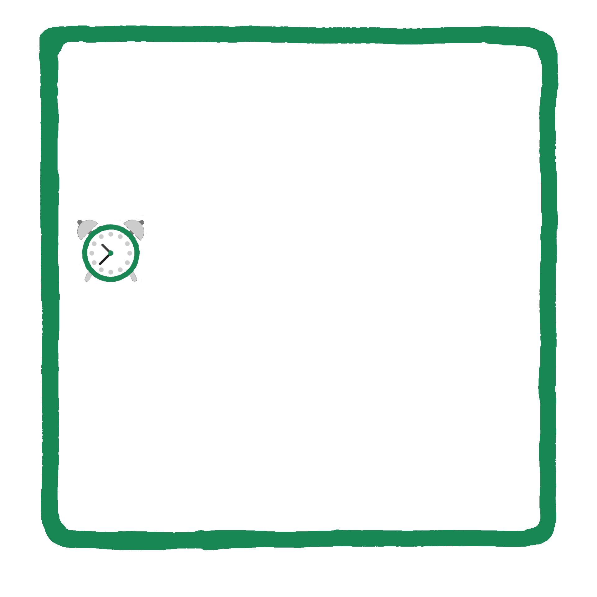

NextWake
Версія 1.0NextWake — це сучасний, мінімалістичний та надійний веб-будильник.
Завдяки NextWake ви можете легко встановлювати безліч будильників, налаштовувати точний час та дату спрацювання, а також керувати своїм розкладом з будь-якого пристрою.